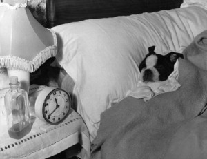

Догляд за собакою
Утримання вашого хвостатого друга у квартирі та догляд за собакою має свої складності:
По-перше - не всі собаки створені для життя у квартирі: у першу чергу це відноситься до мисливських собак, яким потрібен рух, а тісні простори квартири змусять їх занудитися; по-друге - утримання собак у місті регламентується законодавчо і утримання "небезпечної" собаки може обернутися проблемами для господарів при відсутності належного виховання пса.
Перш ніж щеня (або вже дорослий собака) з'являться в будинку потрібно визначити постійне місце розміщення нового жителя. Місце щеняті (собаці) потрібно виділити світле, віддалене від опалювальних приладів і протягів. У проході - на кухні або в коридорі щеня не буде почувати себе спокійно. Буває, що цуцик сам вибирає собі місце, ближче до хазяїна; якщо це прийнятно, підстилку можна помістити там. Для лежанки зручно використовувати матрасик, до нього можна зшити наволочку й міняти в міру забрудненн
Потім підбирається посуд (для годівлі собак) і підставка для мисок, висота якої періодично міняється залежно від росту щеняти (під час їжі голова щеняти повинна перебувати на рівні спини).
Щоб собака залишався здоровим за ним необхідний постійний догляд: регулярні гігієнічні процедури допомагають запобігти різноманітними хворобами собак та проблемам, які пов'язані з шерстю, органами слуху, нюху і зору.
Із раннього віку щеня привчається до розчісування, купання, і іншим процедурам по догляду за зубами і лапами, очими й вухами. Для такого догляду будуть потрібні різноманітні інструменти: щітки, гребінці, щипці для підстригання пазурів і т.д.